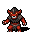

攻撃の追加効果 Attack flavour
英語版 CrawlWiki の記事「Attack flavour」(0.34 向け、2026-09-28 版)の翻訳です。原文の著者は編集履歴をご覧ください。
ほぼすべてのモンスターは近接攻撃で物理ダメージを与えてくるが、それに加えて属性のダメージを与えたり、さまざまな厄介な状態異常を引き起こしたりするものも多い。モンスターの近接攻撃にどんな効果があるかは、そのモンスターの攻撃の追加効果で決まる。追加効果はモンスターの近接攻撃をいろいろな形で変化させ、素手で攻撃してくる場合にも武器を持っている場合にも働く。
| 追加効果 | 例 | 説明 |
|---|---|---|
| 通常(Plain) | g  ゴブリン |
特別な効果はない。 |
| 間合い(Reaching) | t |
生まれつき間合いが長い(2マス離れたところから近接攻撃できる)。 |
| 締めつけ(Constrict) | S |
相手を締めつける(その場に押さえ込み、ダメージを与え続ける)。 |
| 逆棘(Barbs) | w |
攻撃した相手に逆棘を刺し込み、以後は動くたびに痛むようにする。 |
| 踏みつけ(Trample) | Y |
相手を1マス押し戻すことがある(確率は攻撃側と比べた相手の体格で決まる)。押し戻しに成功すると、攻撃側は相手のいたマスへ進む。 |
| 引きずり(Drag) | l |
相手を自分のほうへ引き寄せながら、1マス後ろへ下がる。攻撃側が間合いを持っていて離れた位置から攻撃したときは、後ろへは下がらない。 |
| 火炎(Fire) | b |
HD + 1d(HD) - 1 の火炎ダメージを上乗せする。 |
| 純粋な火炎(Pure fire) | E |
物理ダメージはなく、HD + 1d(HD + 1) + (HD / 2) の火炎ダメージだけを与える。 |
| 焼き焦がし(Sear) | n |
相手の火炎耐性を1段階奪うことがある。 |
| 冷気(Cold) | Y |
HD + 1d(HD*2) - 1 の冷気ダメージを上乗せする。 |
| 電撃(Electricity) | F |
HD + 1d(HD/2) - 1 の電撃ダメージを上乗せする。 |
| 酸(Acid) | J |
相手に4d3の酸ダメージを浴びせる。そのぶんダメージが増えるうえ、腐食させることもある。 |
| 伸びる舌(Reach tongue) | F |
生まれつき間合いが長く、相手に酸を浴びせて腐食させることがある。 |
| 毒(Poison) | S |
HD*2〜HD*4 の毒ダメージを与える。毒耐性のある相手にも1/3の確率で効く。詳しくは毒の種類を参照。 |
| 強い毒(Strong poison) | s |
HD*11/3〜HD*13/2 の毒ダメージを与える。毒耐性のある相手にも1/3の確率で効く。詳しくは毒の種類を参照。 |
| 麻痺毒(Paralytic poison) | y |
毒が効く相手なら、毒を受けたうえで1d3ターン減速し、1/6の確率で1d3ターン麻痺する。毒耐性のある相手にも1/3の確率で効く。 |
| 一瞬の麻痺(Momentary paralysis) | J |
麻痺毒に似ているが、減速はさせず、そのかわり100%の確率で相手を1ターン麻痺させる(毒耐性や毒無効があれば、そのぶん効きにくくなる)。 |
| 伸びる毒針(Reach sting) | 4 |
生まれつき間合いが長く、毒を与える。 |
| 溺れ(Drown) | m |
攻撃で少量の窒息ダメージを与える。 |
| 浸水(Flood) | E |
攻撃で相手を水に包み込み、肺の浸水状態にすることがある。この状態の間は窒息ダメージを受け続け、呼吸の必要な相手には静寂と同じ効果もかかる。窒息に耐性があれば、どちらの効果も受けない。 |
| 神聖(Holy) | D |
邪悪な相手や不浄な相手には、ダメージが75%増える。武器の神罰ブランドに似ているが、ランダムな要素はない。 |
| 歪曲(Distortion) | v |
生まれつき歪曲ブランドを持つ(耐性で防げない追加ダメージを与えるか、相手を瞬間移動させるか、相手をアビスへ追放する)。 |
| 裂け目(Rift) | P |
3マス先までの相手を直接狙って攻撃できる。歪曲ブランドの効果も付く。 |
| 苦痛(Pain) | 5 |
生まれつき苦痛ブランドを持つ(攻撃側のHDに応じた負のエネルギーダメージを与える) |
| 経験値吸収(Drain XP) | z |
50%の確率で相手を衰弱させる(プレイヤーは最大HPが、モンスターはHDが一時的に下がる)。攻撃のダメージが6未満だと発動率は3%しかなく、もともとダメージのない攻撃(「接触」など)では33%になる。名前とは裏腹に、この追加効果でプレイヤーの経験値が減ることはまったくない。 |
| 吸血(Vampiric) | V |
相手が冷血か温血なら、攻撃側が1d(与えたダメージ)だけ回復する。血の通っていない相手にも普通にダメージは与えるが、回復はしない。 |
| 影の一突き(Shadow stab) | @ |
攻撃側が透明で、光輪や後光に照らされていなければ、移動速度が上がり、1回の攻撃に限って命中率100%、ダメージ2.5倍になる。相手が霊視を持っていると、ダメージと命中の上乗せは打ち消されるが、速度の上昇はそのまま残る。攻撃したあと、攻撃側の透明は解ける。 |
| 速度吸収(Drain speed) | W |
相手を減速させることがある。 |
| スカラベ(Scarab) | B |
吸血と速度吸収の両方を持つ。 |
| 絡めとり(Ensnare) | s |
攻撃が少しでもダメージを与えると、50%の確率で相手を蜘蛛の巣に捕らえる。 |
| 窃盗(Steal) | f |
攻撃のたびに所持品からアイテムを1つ盗む(プレイヤーにしか効かない)。 |
| 腐食(Corrode) | 4 |
相手を腐食させる。 |
| 虚弱(Weakness) | 4 |
攻撃で相手を虚弱状態にすることがある。 |
| 睡眠(Sleep) | f |
ダメージを与えたとき、50%の確率で相手を眠らせる。 |
| 混乱(Confuse) | s |
33%の確率で相手を混乱させる。攻撃のダメージが3未満なら確率は10%。持続は 1d(HD + 3) / 10 ターン(端数切り上げ)で、重なっても最大4ターンまで。 |
| 激昂(Rage) | y |
33%の確率で相手をバーサーク状態にする(相手がバーサークできる場合)。 |
| 血の狂乱(Bloodzerk) | F |
血の出る相手に攻撃を当てると、攻撃側が怪力状態になり、続いてバーサーク状態になる。 |
| 意志力低下(Vulnerable) | W |
33%の確率で相手の意志力を一時的に半分にする。相手がすでにこの状態なら、かわりに効果の持続時間が延びる。 |
| 反魔法(Antimagic) | S |
生まれつき反魔法ブランドを持つ(プレイヤーからはMPを奪う。モンスターには呪文の失敗率を与え、この失敗率は受けた反魔法ダメージに応じて上がり、時間とともに下がっていく)。 |
| 急降下(Swoop) | 4 |
相手が離れていると、舞い降りてきて近接攻撃を仕掛ける。 |
| 回り込み(Flank) | 5 |
攻撃の前に相手の背後へすべり込む。 |
| 瞬間移動(Blink) | F |
攻撃が命中したあと、33%の確率で攻撃側が瞬間移動する。 |
| 道連れ瞬間移動(Blink with) | W |
攻撃が命中したあと、攻撃側が自分と相手をまとめて瞬間移動させることがある。 |
| 蜘蛛(Spider) | s |
攻撃のときに蜘蛛を召喚することがある。 |
| 地獄の狩り(Hell hunt) | b |
命中するとヘルハウンドかヘルラットを召喚する。 |
| 群れ(Swarm) | F |
命中すると自分と同じモンスターを1体召喚する。 |
| 混沌(Chaos) | 4 |
攻撃のたびに、追加効果が次のどれかに変わる。 |
| 穢れた炎(Foul flame) | & |
神聖な生き物には75%、中立の生き物には50%、邪悪な生き物には25%、ダメージを上乗せする。 |
| 旋風(Airstrike) | F |
呪文の旋風の一撃と同じように、相手の隣に開けたマスが多いほどダメージが増える。 |
| 毒煙の噴出(Vent fumes) | 9 |
攻撃を当てると、相手のいるマスとその周りに毒の雲を発生させる。 |
| 小型爆弾(Bomblet) | E |
攻撃のときに小型爆弾を召喚することがある。 |
| トリックスター(Trickster) | [ |
相手を衰弱、眩暈、混乱のいずれかの状態にすることがある。これには抵抗できない。 |
| 呪文弱化(Dim) | J |
相手の呪文の威力を下げる。 |
| 破滅(Doom) | 5 |
相手の「破滅のメーター」を (5 + HD / 3) から (8 + HD) までの値だけ増やし、破滅を近づける。プレイヤーがすでに災厄を抱えていると、増える量は少なくなる。 |
| スライム化(Slimify) | J |
相手をスライムに変える。プレイヤーはスライム化状態になり、数ターン後にジェリーに変身する。モンスターは25%の確率でその場で変えられてしまう。 |
| 醜きものの薙ぎ払い(Reach cleave ugly) | x |
醜きものの攻撃の追加効果からランダムに1つを選んで攻撃する。さらに射程が2あり、周りのマスも薙ぎ払う。 |

変更履歴
- 0.35では、間合いや薙ぎ払いを含む追加効果がすべて削除され、そのかわりに間合いと薙ぎ払いを攻撃ごとの性質として個別に付けられるようになる予定。[1]
- 0.34で、包み込み(Engulf)が肺の浸水の弱体効果を与えるものに変わり、破滅、醜きものの薙ぎ払い、呪文弱化、スライム化の追加効果が新しく加わった。
- 0.33で旋風、蒸留器(Alembic)、小型爆弾、トリックスターの追加効果が加わった。0.33より前は、能力値(腕力/器用/知力)を吸い取る追加効果を持つモンスターもいた。
- 0.32で引きずり、群れ、地獄の狩り、穢れた炎の追加効果が加わった。
- 0.31で回り込みと一瞬の麻痺の追加効果が加わり、焼夷の炎と変異(Mutate)の追加効果がなくなった。変異のほうは、25%の確率でプレイヤーに悪性変異を起こすものだった(相手がモンスターなら変化させる)。
- 0.30で睡眠と血の狂乱の追加効果が加わった。
- 0.29で裂け目の追加効果が加わった。
- 0.28で引き撃ち(Kite)の追加効果がなくなり、逆棘と蜘蛛の追加効果が加わった。
- 0.27で道連れ瞬間移動の追加効果が加わった。
- 0.26で腐敗(Rot)と飢餓(Hunger)の追加効果がなくなった。腐敗を与えていた敵はかわりに衰弱を与えるようになり、衰弱のほうもプレイヤーの最大HPを一時的に下げる効果に変わった。
- 0.23でピエロ(Klown)の追加効果がなくなった。これは火炎、冷気、電撃、強い毒、速度吸収、苦痛、反魔法の中からランダムに選ばれるものだった。
- 0.22より前は、包み込み(Engulf)を受けると移動にペナルティがつき、プレイヤーの移動にかかる時間が2倍になっていた。
- 0.19で瘴気(Miasmata)の追加効果がなくなった。
- 0.18で瘴気の追加効果が加わり、火付け(Firebrand)の追加効果がなくなった。
- 0.16で腐食、スカラベ、踏みつけ、引き撃ち、急降下の追加効果が加わった。また、速度吸収による減速が rN+ でも防げなくなった。
- 0.15で疫病(Plague)の追加効果がなくなり、焼夷の炎の追加効果が加わった。アイテムが壊されることもなくなったので、火炎と冷気の攻撃、それにこれらを起こしうるもの(混沌とピエロ)の怖さは減った。
- 0.14ではモンスターの追加効果がたくさん変わった。
- ピエロの追加効果は、火炎、冷気、猛毒(Nasty poison)、経験値吸収、腐敗、瞬間移動、反魔法の中から選ばれていた。
- ハーピーは食料窃盗(Steal Food)のブランドを持っていた。攻撃するとときどき、所持品の食料か、相手が食料の上に立っていれば床の食料を、1つ以上食べてしまった。
- 毒(能力値)の追加効果があった。能力値吸収のブランドを大まかにまねたもので、相手が毒に耐性を持っていなければ、33%の確率で特定の能力値を一時的に1ポイント下げた。
- 毒の仕組みの見直しで、猛毒と中程度の毒(Medium Poison)の追加効果がなくなった(詳しくは毒の種類を参照)。それぞれのモンスターに合わせて、通常の毒か強い毒のどちらかに振り分けられた。
- 0.13で病気(Disease)の追加効果がなくなり、疫病の追加効果が加わった。
出典
- ↑ Allow specifying monster reach and cleaving per-attack, improve xv (0.35-g5b94f9f)